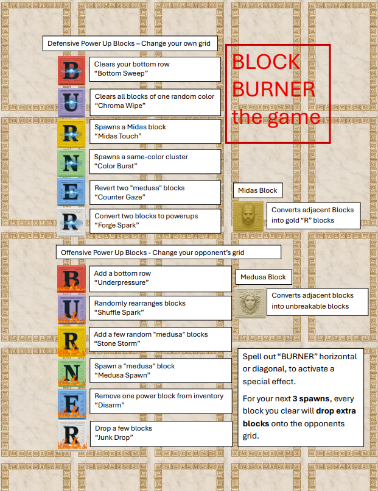

Block Burner the game
By: Justin S
10-25-2025
Home Page

Table of Contents
Check Out the powerups here!
World Background
Year 2179.
Earth outsourced survival. After the Resource Collapse, humanity built a fully automated off-world supply chain: mining drones strip asteroids, harvest moons, tear derelict satellites apart — anything that has mass is converted into standardized freight cubes in orbit. Those cubes are dropped back to Earth in high-volume “material storms.” It never stops. The system is run by A.G.N.I. (Autonomous Global Networked Infrastructure), an AI logistics network that decides who gets which materials, when, and how much. A.G.N.I. doesn’t care if humans can keep up. It only cares about throughput quotas. Cities aren’t cities anymore. They’re landing zones. The only thing between order and overflow is one job.
What is a Block Burner?
You are a Block Burner. A Block Burner stands in a processing pit at ground level and handles impact loads in real time. Your job is to: catch incoming resource cubes, sort them fast, fuse compatible materials, clear usable composites, and push waste back up the line. If you keep the pit stable and efficient, your sector stays supplied and you get paid. If you choke the pit and let it jam, pressure builds, the stack breaches containment, and the pit detonates. You’re done. Your district goes dark. You lose.
Block Burners are not “employees.” They are “licensed throughput assets.” You are not the hero. You are the last human step in an automated supply chain that doesn’t actually need you. Keep pace. Or get replaced.
You control the grid
Your grid = your pit. Each cell is a 1m³ impact cube of raw matter: alloys, fuel slurry, biofiber, toxic slag, weapon scrap, whatever A.G.N.I. rips out of orbit and slams into your zone. When you connect compatible materials (match / clear lines in the game), that’s you fusing them into usable product. Fused product gets auto-lifted out of the pit by cranes and sent to manufacturing. When you fail to use the material efficiently — when you leave pieces sitting there — the pit backs up. You’re wasting payload. A.G.N.I. flags you for inefficiency. Once the pile reaches critical height (top of grid), you are marked “non-viable resource handler.” A.G.N.I. cuts your contract and locks your bay. Translation: game over. The multiplayer battle is not “friendly competition.” It's industrial warfare. Two Block Burners are assigned adjacent sectors. You’re both on the same drop schedule. You’re both graded in real time. Only one contract gets renewed. A.G.N.I. monitors waste output. Any material you fail to convert efficiently is classified as “Residual Load.” Residual Load can be redirected… to someone else’s pit.
When you clear efficiently, you generate waste pressure. That waste pressure can be vented into your opponent’s pit as junk blocks. You’re literally dumping industrial overflow into their containment zone to force them to jam first. A.G.N.I. calls this “competitive load balancing.” Block Burners call it sabotage. Burner Mode / “BURNER” word effect When you trigger the Burner effect (spelling BURNER in-game): Lore version: You temporarily override A.G.N.I.’s safety throttles. For three incoming drops, every load you process vents unstable scrap straight into your opponent’s pit. That scrap doesn’t have to be compatible with their existing stack, so it just clogs everything.
Power-ups and Features

Offensive Power-ups
All offensive power blocks target your opponent's grid and can be used once per power block:
- B - Adds a row of blocks to the opponent's bottom row
- U - Randomly reshuffles the placement of several blocks
- R - Adds several "medusa" blocks in random positions
- N - Creates a special "medusa" block that converts surrounding blocks into unbreakable ones upon reaching the bottom
- E - Removes one power block from opponent's inventory
- R - Adds additional blocks to opponent's grid
Defensive Power-ups
All defensive power blocks affect your own grid and can be used once per power block:
- B - Removes the bottom row of blocks
- U - Removes all blocks of one random color
- R - Creates a "midas" block that converts surrounding blocks to matching colors upon reaching bottom
- N - Creates a 2x2 cluster of same-colored blocks in a random location
- E - Converts two "medusa" blocks back to regular blocks
- R - Transforms two regular blocks into power blocks
Block Burner - a multiplayer game
Block Burner is an exciting multiplayer game that challenges players to strategically place blocks and clear them with the goal of overloading your opponent's grid. The game combines elements of strategy, quick thinking, and teamwork, making it a thrilling experience for players of all ages. This game was inspired by a classic game called Yahoo Towers.
The official web site
Check it out at Block Burner on itch.io!
In Block Burner, players take turns placing blocks on a grid, aiming to create patterns that will allow them to burn their blocks and score points. The game requires players to think ahead, anticipate their opponents' moves, and adapt their strategies on the fly. With its simple yet engaging mechanics, Block Burner is easy to learn but difficult to master.
At the moment, the game is only a 2 player or 1 player vs CPU experience, but I plan to expand it to support more players in the future. It will support 2 to 8 players. Users will be able to create their own table and play against their friends or dominate random players from around the world.
The Appeal of Block Burner for Multiplayer Enthusiasts
Block Burner presents a unique solution for those who enjoy engaging, strategic multiplayer games. Whether you're a casual player or a competitive gamer, Block Burner offers a fresh and exciting experience that challenges your tactical thinking and teamwork skills.
Beyond its strategic gameplay, Block Burner is also designed to be accessible and fun. With its intuitive controls and vibrant visuals, it appeals to a wide range of players, making it a standout title in the multiplayer gaming community.
A New Era of Multiplayer Gaming
Block Burner introduces a new era of multiplayer gaming by offering seamless connectivity and engaging gameplay. Players can join games effortlessly, collaborate with friends, and compete against others from around the world. This accessibility and social aspect make Block Burner a standout title in the gaming community.